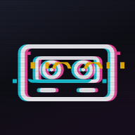

tools
制作補助ツール
ブラウザだけで動く、ビルド不要のツール置き場です。どちらもデータはすべて端末内で処理され、どこにも送信されません。

VHS / GLITCH CAM
カメラ映像にVHS風の色にじみ・走査線・トラッキングノイズと、デジタルグリッチをリアルタイムで乗せて撮影します。エフェクトが焼き込まれた状態で写真・動画を保存できます。
ホーム画面に追加でアプリ化LAYER SONG
1曲の歌詞を3つのトラックに分解します。それぞれ単独でも成立し、3曲を重ねて歌うと元の1曲が浮かび上がる——そんなギミック曲づくりを補助します。